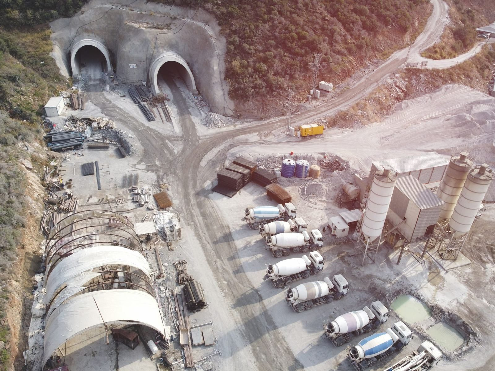
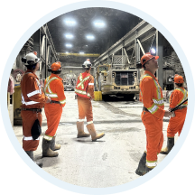
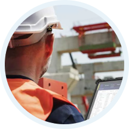
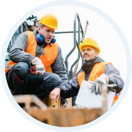
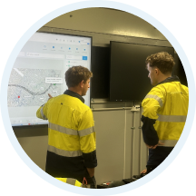
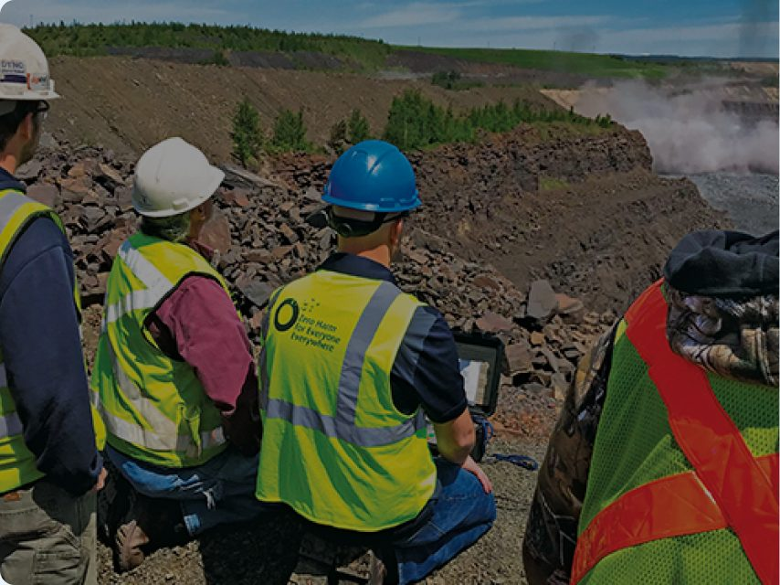

Why iottag
Engineering Better Operational Decisions
Organisations do not invest in technology because they need more data.
They invest because they need:
- Better decisions
- Safer operations.
- Improved productivity
- Better decisions
- Safer operations.
- Improved productivity
iottag helps organisations understand what is happening across their operations, why it matters and where attention may be required.
By combining engineering, data science, operational technology and real-world industry expertise, we help organisations transform operational complexity into actionable intelligence.
We Believe Understanding Creates Better Outcomes
Every operation generates information.
People
Vehicles
Equipment
Environmental Conditions
Production systems
Safety controls
The challenge is not collecting information
The challenge is understanding how these factors interact and influence outcomes
Everything we build is designed to help organisations create a clearer understanding of their operations
Because better understanding leads to better decisions.
Operational Intelligence First
Many technology providers focus on a single problem.
Engineered End-to-end
We believe operational environments deserve technology that is designed for the realities of the field.
From workforce wearables and positioning infrastructure through to software platforms, analytics and operational dashboards, iottag designs, supports and maintains the core components of its Operational Intelligence ecosystem.
Tighter integration
Improved reliability
Faster innovation
Long-term supportability
Single-point accountability
When technology works together, operations perform better
Built for Complex Environments
Operational Intelligence is most valuable where complexity exists.
Our solutions support organisations operating across:
These environments demand visibility, coordination and informed decision-making.
That is where iottag performs best.
From Operations to Executive Leadership
Operational Intelligence should create value for every level of the organisation.

Operational Teams
Situational awareness
and coordination.

Supervisors
Operational oversight and resource management.

Management
Performance visibility
and planning.

Executive Leadership
Governance, benchmarking and decision support.
Asset Owners
Assurance and operational confidence.
AI that helps
People understand Complexity
Modern operations generate more information than any individual can reasonably interpret.
iottag uses AI to help transform operational information into meaningful insight.
By analysing relationships between operational conditions, activities and events, the platform helps organisations understand:
Trusted Across Challenging Operational Environments
Our solutions support some of the world’s most demanding operational environments.
From underground mining and major infrastructure projects through to critical infrastructure and healthcare environments, organisations trust iottag to deliver reliable operational visibility and insight where it matters most.
 Canada
USA
Europe
Africa
Singapore
Australia
New Zealand
Canada
USA
Europe
Africa
Singapore
Australia
New Zealand
Our mission
To help organisations create safer, more productive and better informed operations through Operational Intelligence.

We believe that better visibility creates better understanding
Better understanding creates better decisions
And better decisions create better outcomes

Transform Operational Complexity Into Actionable Intelligence
Discover why organisations choose iottag to improve visibility, safety, productivity and operational performance.